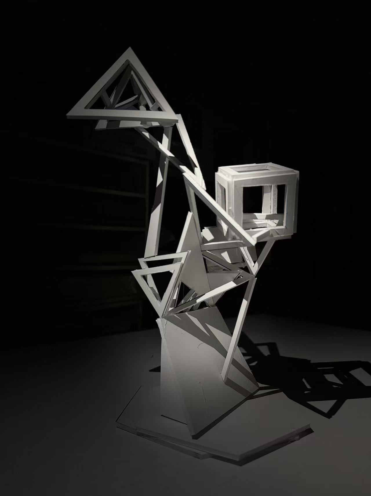

"Germination" is a spatial exploration driven by the biological morphology of the white dulcamara. The project translates the plant's upward trajectory—characterized by its stability, rapid expansion, and unpredictable directional shifts—into a rigid geometric language.
By systematically mapping botanical anatomy to tectonic elements, the organic growth process becomes readable in the architecture: the Root anchors the composition as the foundational Pedestal; the Stem transforms into the primary vertical Support; the Branches cantilever outward as dynamic spatial Extensions; and the Flower Bloom culminates as the peak Building form. This composition bridges the organic vitality of nature with the structural logic of constructed space.
